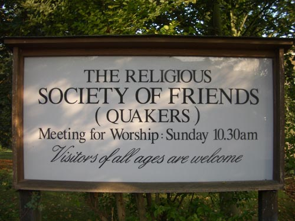
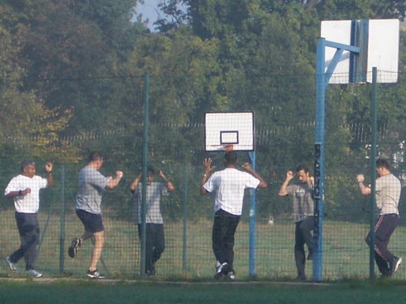
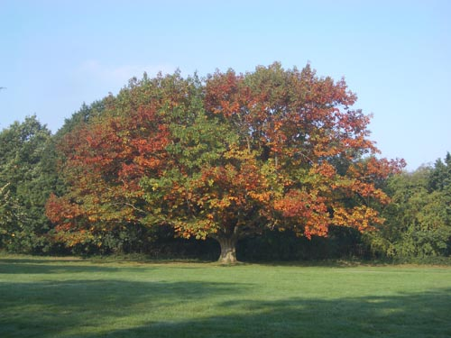
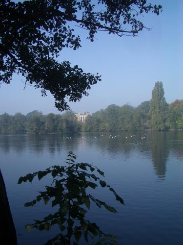
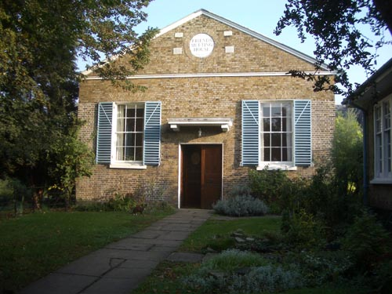
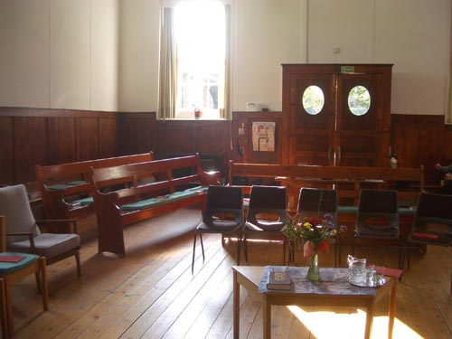
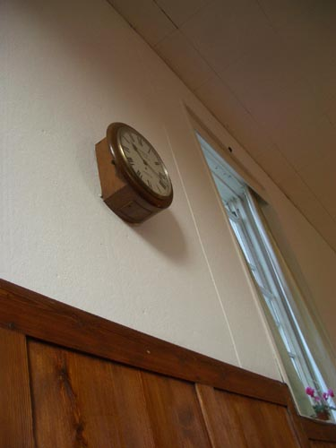

| < | > |
| clockwise | [2005-10-19 23:54] |
| another solo sunday - another quaker adventure
when i'd been in tottenham someone had mentioned winchmore hill - so i had it in my mind that that was where i would go next the journey planner had my route all worked out - so up i got at dawn - straight out of bed into the shower - feeling a bit like one feels getting up early to catch a plane rattling steadily up the victoria and then the picadilly line it struck me how almost everyone on the train was a poor world worker - bleary blank tired nodding heads eventually out at wood green in a cool grey mist - one could feel one was walking out onto the side of a hill - north north london - as the bus trundled along i watched the name of almost every stop like a hawk - here we are - station road - i was early - far too early - before i knew it i was passing the meeting house  never mind - i knew there was a park nearby - i ambled on - gustily singing my current tom moore song silent oh moyle be the roar of thy waterfor a moment it was almost like being in berlin again - reveling in the suburban unknown - the early morning machos - the new colours of autumn - the lake and the clinic where pinocheat had stayed    time to get back to the meeting and take some pics before the people arrived - this was an old established meeting - it had been there for over 300 years   as we settled down - and the stragglers shuffled in - i realised just how loud that clock above my head was - just how could they do that - but there it was - tick tock tick tock tick tock - it went on and on and on  at first i tried to absorb it - ignore it - rise above it - none with any success - it was a demon - a vicious little cartoon monster munching at time - a guillotine slicing off seconds - my mind simply hadn't a good image to associate with its relentless clunking and as i looked around me there was a lot of drowsing going on - an old lady beside me sank forward until her head was almost on her knees - and then her glasses fell off - in front of me there was some rather manic head nodding - mid room a lady rose and gave a reading about the power of the lord - later an ernest young man rambled on about how change is possible - his emphasis i began to tunnel down into my thoughts - words were forming - i was trying hard not to accuse them of insensitivity - what came out was this that poor unfortunate clock after some time a tall mild gentleman stood and remarked that the sun too was a clock - and that light moved through the room marking the passage of time - perhaps he was trying to lull me gently into acceptance but by this time there was no need - i'd found out for myself how to deal with the little beast - if i smiled - and listened carefully - i could hear it childishly prattle humpty dumptysomehow my indignation abated - we could coexist and then suddenly we were shaking hands with those nearest - smiling and nodding - back in the world of social interaction again over tea i discussed with a few old and not so old ladies which meeting i might visit next - the speedy conclusion was stoke newington george fox - i was told - when he had set up the meeting structure for london had divided it into slices - like a cake - so that the wealthier outer meetings would take care of the less wealthy inner regions so that's the plan - do the remaining two meetings in this slice and then move on the the next one and which way would i go around london - why clockwise of course |
|
|
|